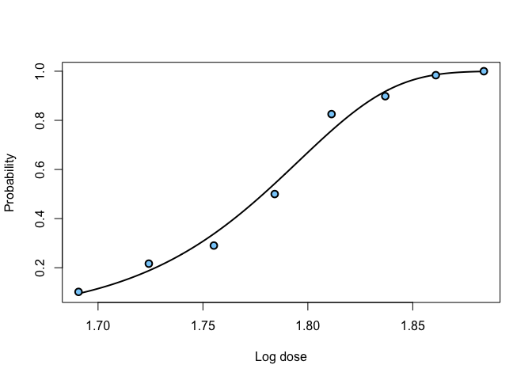
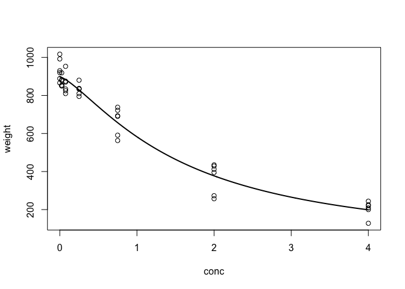
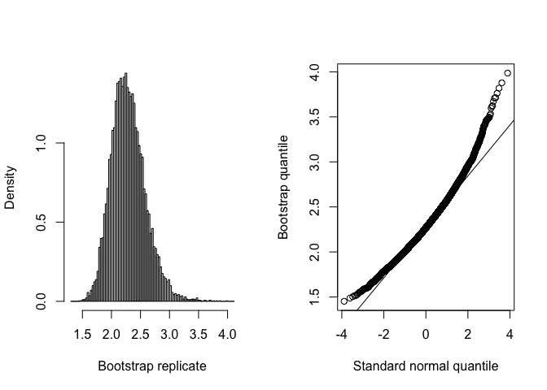

Inverse estimation, also referred to as the calibration problem, is a classical and well-known problem in regression. In simple terms, it involves the use of an observed value of the response (or specified value of the mean response) to make inference on the corresponding unknown value of an explanatory variable.
A detailed introduction to investr has been published in The R Journal: “investr: An R Package for Inverse Estimation”. You can track development at https://github.com/bgreenwell/investr. To report bugs or issues, contact the main author directly or submit them to https://github.com/bgreenwell/investr/issues.
As of right now, investr supports (univariate) inverse estimation with objects of class:
-
"lm"- linear models (multiple predictor variables allowed) -
"glm"- generalized linear models (multiple predictor variables allowed) -
"nls"- nonlinear least-squares models -
"lme"- linear mixed-effects models (fit using thenlmepackage) -
"survfit"/"Surv"- Kaplan-Meier survival curves (fit using thesurvivalpackage), for example, median survival time
Installation
# Install from CRAN (recommended)
install.packages("investr")
# Latest development version, from r-universe
install.packages("investr", repos = c("https://bgreenwell.r-universe.dev", "https://cloud.r-project.org"))The package is also part of the ChemPhys task view, a collection of R packages useful for analyzing data from chemistry and physics experiments. These packages can all be installed at once (including investr) using the ctv package (Zeileis, 2005):
# Install the ChemPhys task view
install.packages("ctv")
ctv::install.views("ChemPhys")Examples
Dobson’s Beetle Data
In binomial regression, the estimated lethal dose corresponding to a specific probability p of death is often referred to as LDp. invest obtains an estimate of LDp by inverting the fitted mean response on the link scale. Similarly, a confidence interval for LDp can be obtained by inverting a confidence interval for the mean response on the link scale.
# Load required packages
library(investr)
# Binomial regression
beetle.glm <- glm(cbind(y, n-y) ~ ldose, data = beetle,
family = binomial(link = "cloglog"))
plotFit(beetle.glm, lwd.fit = 2, cex = 1.2, pch = 21, bg = "lightskyblue",
lwd = 2, xlab = "Log dose", ylab = "Probability")
# Median lethal dose
invest(beetle.glm, y0 = 0.5)
#> estimate lower upper
#> 1.778753 1.770211 1.786178
# 90% lethal dose
invest(beetle.glm, y0 = 0.9)
#> estimate lower upper
#> 1.833221 1.825117 1.843068
# 99% lethal dose
invest(beetle.glm, y0 = 0.99)
#> estimate lower upper
#> 1.864669 1.853607 1.879133To obtain an estimate of the standard error, we can use the Wald method:
Including a factor variable
Multiple predictor variables are allowed for objects of class lm and glm. For instance, the example from ?MASS::dose.p can be re-created as follows:
# Load required packages
library(MASS)
# Data
ldose <- rep(0:5, 2)
numdead <- c(1, 4, 9, 13, 18, 20, 0, 2, 6, 10, 12, 16)
sex <- factor(rep(c("M", "F"), c(6, 6)))
SF <- cbind(numdead, numalive = 20 - numdead)
budworm <- data.frame(ldose, numdead, sex, SF)
# Logistic regression
budworm.glm <- glm(SF ~ sex + ldose - 1, family = binomial, data = budworm)
# Using dose.p function from package MASS
dose.p(budworm.glm, cf = c(1, 3), p = 1/4)
#> Dose SE
#> p = 0.25: 2.231265 0.2499089
# Using invest function from package investr
invest(budworm.glm, y0 = 1/4,
interval = "Wald",
x0.name = "ldose",
newdata = data.frame(sex = "F"))
#> estimate lower upper se
#> 2.2312647 1.7414522 2.7210771 0.2499089Bioassay on Nasturtium
The data here contain the actual concentrations of an agrochemical present in soil samples versus the weight of the plant after three weeks of growth. These data are stored in the data frame nasturtium and are loaded with the package. A simple log-logistic model describes the data well:
# Log-logistic model for the nasturtium data
nas.nls <- nls(weight ~ theta1/(1 + exp(theta2 + theta3 * log(conc))),
start = list(theta1 = 1000, theta2 = -1, theta3 = 1),
data = nasturtium)
# Plot the fitted model
plotFit(nas.nls, lwd.fit = 2)
Three new replicates of the response (309, 296, 419) at an unknown concentration of interest ($`x_0`$) are measured. It is desired to estimate $`x_0`$.
# Inversion method
invest(nas.nls, y0 = c(309, 296, 419), interval = "inversion")
#> estimate lower upper
#> 2.263854 1.772244 2.969355
# Wald method
invest(nas.nls, y0 = c(309, 296, 419), interval = "Wald")
#> estimate lower upper se
#> 2.2638535 1.6888856 2.8388214 0.2847023The intervals both rely on large sample results and normality. In practice, the bootstrap may be more reliable:
# Bootstrap calibration intervals (may take a few seconds)
boo <- invest(nas.nls, y0 = c(309, 296, 419), interval = "percentile",
nsim = 9999, seed = 101)
boo # print bootstrap summary
#> estimate lower upper se bias
#> 2.2638535 1.7889885 2.9380360 0.2946540 0.0281456
plot(boo) # plot results
Development
Development happens on the devel branch (the repository default); main holds the stable, CRAN-released version. Please open pull requests against devel and report bugs via the issue tracker.